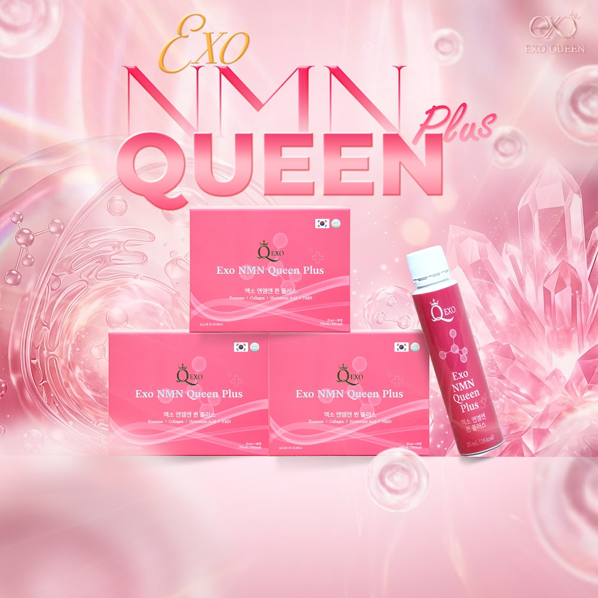
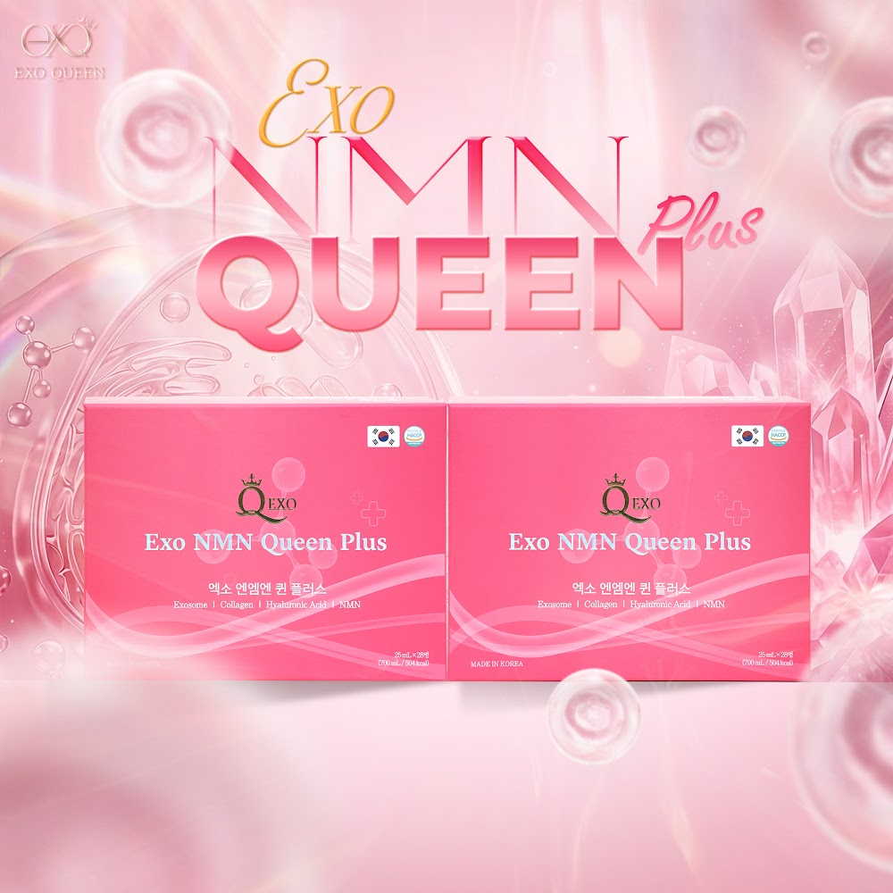

Exo NMN Queen Plus
Nước uống có exosome rau má (Centella asiatica), kết hợp collagen cá Canada, NMN, axit hyaluronic và việt quất. Trang này giải thích sản phẩm được làm từ gì, sản xuất ở đâu và đã được kiểm tra như thế nào, dựa trên hồ sơ gốc của nhà sản xuất.

Exosome là gì?
Hiểu đúng về thành phần đặc trưng của sản phẩm.
Túi siêu nhỏ do tế bào tiết ra
Exosome là những túi ngoại bào có kích thước nano (khoảng vài chục đến vài trăm nanomet), được bao bọc bởi một lớp màng lipid kép. Bên trong chứa protein và các đoạn RNA nhỏ.
Có ở cả thực vật
Không chỉ tế bào động vật, thực vật cũng tiết ra các túi ngoại bào tương tự. Exosome trong sản phẩm này có nguồn gốc thực vật, chiết từ cây rau má, không phải exosome tế bào gốc.
Vì sao chọn rau má
Rau má (Centella asiatica) là loại cây quen thuộc với người Việt, được dùng làm thực phẩm hằng ngày. Đây là nguồn nguyên liệu dễ hiểu, dễ tin với người tiêu dùng.
Nguyên liệu exosome rau má: làm ra thế nào, kiểm tra ra sao
Nguyên liệu do ABio materials (Hàn Quốc) sản xuất bằng quy trình BioTraction™, dành riêng cho nguyên liệu thực phẩm.
Quy trình BioTraction™ gồm 4 bước
Nuôi cấy
Nuôi cấy nguyên liệu thực vật trong bồn phản ứng sinh học (bioreactor).
Xử lý enzyme
Dùng enzyme riêng của ABio để làm mềm mô thực vật, giải phóng túi ngoại bào.
Tách bằng axit hữu cơ
Kết tủa và tách lọc để thu exosome có độ tinh khiết cao.
Sấy phun
Sấy phun thành bột để ổn định và dễ phối trộn vào thực phẩm.
Các chỉ số của nguyên liệu
Theo COA lô 251117 (sản xuất 17/11/2025, phân tích bởi AAPL Institute) và tài liệu kỹ thuật của ABio.
Nhìn thấy cấu trúc bằng Cryo-TEM
Báo cáo ngày 11/03/2026 của AAPL Institute chụp nguyên liệu bằng kính hiển vi điện tử đông lạnh (Cryo-TEM). Ảnh cho thấy rõ cấu trúc màng lipid kép của các hạt exosome rau má.
Nguyên liệu còn được đo số hạt và kích thước bằng NTA, và nhuộm màng phospholipid bằng Oil-red-O.
Độ bền của nguyên liệu trong phòng thí nghiệm
- Môi trường mô phỏng tiêu hóa (axit pH 2, pepsin 0,002%, muối mật 0,3%): hình dạng, số hạt và kích thước không thay đổi đáng kể.
- Tiệt trùng 100°C trong 15 phút: số hạt và kích thước ổn định.
- Đông lạnh −70°C trong 3 tuần: số hạt và kích thước ổn định.
Các thử nghiệm độ bền trên được thực hiện với nguyên liệu trong phòng thí nghiệm (in vitro). Chúng mô tả tính chất của nguyên liệu, không phải công dụng của sản phẩm.
Công thức đầy đủ
Theo bản tự công bố số 38/ANTHINHPHAT/2025 và nhãn phụ tiếng Việt. Mỗi ống 25 ml.
| Thành phần | Tỷ lệ | Vai trò trong công thức |
|---|---|---|
| Nước tinh khiết | 71,4% | Nền dạng nước uống |
| Cô đặc việt quất | 13% | Tạo vị và màu tự nhiên |
| Fructooligosaccharide (FOS) | 5% | Chất xơ hòa tan |
| Collagen cá (xuất xứ Canada) | 4% | Bổ sung collagen |
| Exosome rau má (xuất xứ Hàn Quốc) | 2% | Thành phần đặc trưng của sản phẩm |
| Bột lên men nấm men (NMN 30%) | 2% | Bổ sung NMN |
| Hương việt quất | 1,2% | Hương vị |
| Axit citric khan | 0,4% | Điều chỉnh độ chua |
| Stevia xử lý bằng enzyme | 0,3% | Chất tạo ngọt |
| Chiết xuất mạch nha | 0,3% | Hương vị |
| Hỗn hợp axit hyaluronic (trehalose, axit hyaluronic) | 0,2% | Bổ sung axit hyaluronic |
| Xanthan gum | 0,1% | Tạo độ sánh |
| Taurine | 0,1% | Bổ sung taurine |
| Vitamin C | 0,0001% | Bổ sung vitamin C |
Thông tin dinh dưỡng mỗi ống (25 ml)
Kết quả kiểm nghiệm tại Việt Nam
Thành phẩm được gửi kiểm nghiệm tại Viện Kiểm nghiệm An toàn Vệ sinh Thực phẩm Quốc gia (NIFC, Bộ Y tế), phòng thử nghiệm đạt ISO/IEC 17025.
Phiếu 12550/PKN-VKNQG: chỉ tiêu thành phần
Mẫu NSX 22/12/2025, kiểm nghiệm từ 13/01 đến 06/03/2026.
- NMN (β-Nicotinamide Mononucleotide): 139 mg/100 ml, tương đương khoảng 35 mg mỗi ống
- Taurine: 69,4 mg/100 ml
- Vitamin C (acid ascorbic): 0,47 mg/100 ml
- Acid citric: 0,31 g/100 ml
Phiếu 74320/PKN-VKNQG: chỉ tiêu an toàn
Kiểm tra các chỉ tiêu vi sinh vật và kim loại nặng: không phát hiện vi sinh vật gây hại và kim loại nặng.
Kết quả kiểm nghiệm chỉ có giá trị với mẫu đem thử. Khách hàng và đại lý có thể yêu cầu xem bản gốc phiếu kiểm nghiệm.
Từ nguyên liệu đến tay người dùng
Mỗi khâu đều có đơn vị chịu trách nhiệm và giấy tờ đi kèm.
ABio materials
Sản xuất nguyên liệu exosome rau má tại Jecheon, Hàn Quốc. Có COA theo từng lô.
Cosmax Bio
Sản xuất thành phẩm tại Jecheon, Chungcheongbuk-do. Tiêu chuẩn sản phẩm JS-L185 (24/11/2025).
Nowlab Co., Ltd
Xuất khẩu và cung cấp từ Hàn Quốc.
An Thịnh Phát
Nhập khẩu chính ngạch, phân phối và chịu trách nhiệm chất lượng tại Việt Nam.
Hồ sơ chất lượng
- Chứng nhận HACCP số 2016-6-8039 của Cosmax Bio, phạm vi nước uống hỗn hợp, hiệu lực từ 19/02/2025 đến 18/02/2028. Các điểm kiểm soát tới hạn gồm soi X-quang, dò kim loại, tiệt trùng, làm sạch chai và tiệt trùng sau đóng gói.
- Giấy chứng nhận lưu hành tự do (CFS) do Bộ An toàn Thực phẩm và Dược phẩm Hàn Quốc (MFDS) cấp. Có thể tra cứu trên cổng foodsafetykorea.go.kr.
- Đăng ký cơ sở với FDA Hoa Kỳ (FFR) của Cosmax Bio Korea. Đây là đăng ký cơ sở sản xuất, không phải phê duyệt sản phẩm.
- Bản tự công bố số 38/ANTHINHPHAT/2025 ngày 15/12/2025 và nhãn phụ tiếng Việt.
- Kiểm nghiệm tại NIFC: phiếu 74320/PKN-VKNQG và 12550/PKN-VKNQG.
Cách dùng và bảo quản
Một hộp 28 ống 25 ml (700 ml) dùng đúng 4 tuần. Hạn sử dụng 24 tháng kể từ ngày sản xuất.

Liều dùng
Ngày 1 lần, mỗi lần 1 ống 25 ml. Lắc nhẹ trước khi uống.
Đối tượng
Người trưởng thành. Phụ nữ mang thai, cho con bú hoặc người có bệnh lý nên hỏi ý kiến bác sĩ trước khi dùng.
Bảo quản
Nơi khô ráo, thoáng mát, tránh ẩm và ánh nắng trực tiếp. Sau khi mở nắp, đậy kín và để trong tủ lạnh.
Câu hỏi thường gặp
Những điều khách hàng hay hỏi.
Uống exosome vào có bị tiêu hóa hết không?
Nhà sản xuất nguyên liệu đã thử độ bền của exosome rau má trong môi trường mô phỏng tiêu hóa (axit pH 2, pepsin, muối mật) trong phòng thí nghiệm. Số hạt và kích thước không thay đổi đáng kể. Đây là kết quả về độ bền của nguyên liệu, không phải công dụng của sản phẩm.
Exosome này có phải exosome tế bào gốc không?
Không. Đây là exosome có nguồn gốc thực vật, chiết từ cây rau má (Centella asiatica).
Sản phẩm có phải nước collagen không?
Không hẳn. Đây là công thức kết hợp exosome rau má, collagen cá, NMN, axit hyaluronic và việt quất. Collagen là một trong các thành phần, exosome rau má là điểm đặc trưng.
Có nhiều đường không?
Mỗi ống 25 ml có 18 kcal và 2 g đường tổng số. Vị ngọt đến từ việt quất cô đặc và chất tạo ngọt stevia.
Có phải hàng xách tay không?
Không. Sản phẩm được nhập khẩu chính ngạch bởi Công ty CP Đầu tư TMDV Xuất nhập khẩu An Thịnh Phát, có CFS của MFDS Hàn Quốc, bản tự công bố và nhãn phụ tiếng Việt.
Người dễ dị ứng có dùng được không?
Sản phẩm có collagen cá. Sản phẩm được sản xuất cùng cơ sở với các sản phẩm có trứng, sữa, kiều mạch, đậu phộng, đậu nành, lúa mì, cá thu, cua, tôm, thịt heo, đào, cà chua, óc chó, thịt gà, thịt bò, mực, động vật có vỏ và hạt thông. Người có cơ địa dị ứng vui lòng kiểm tra thành phần trước khi dùng.
Uống bao lâu thì thấy kết quả?
Đây là thực phẩm bổ sung, không phải sản phẩm điều trị, nên chúng tôi không cam kết kết quả hay thời gian. Nhà sản xuất khuyến nghị dùng mỗi ngày 1 ống.
Sản phẩm này không phải là thuốc và không có tác dụng thay thế thuốc chữa bệnh.
Thực phẩm bổ sung Exo NMN Queen Plus · Bản tự công bố số 38/ANTHINHPHAT/2025.